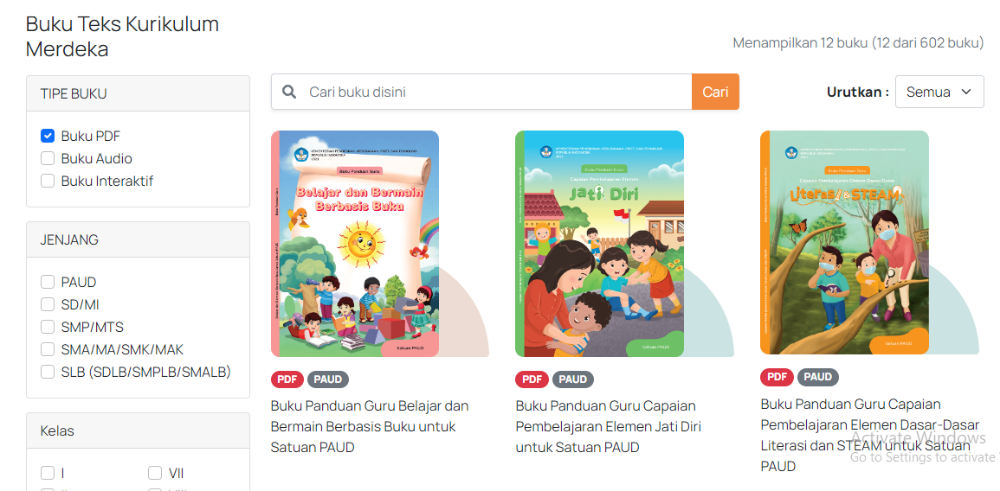

Sistem Informasi Perbukuan Indonesia (SIBI) merupakan platform resmi dari Pusat Perbukuan, Badan Standar, Kurikulum, Asesmen Pendidikan (BSKAP), dan Kemendikbudristek.
SIBI adalah ekosistem digital untuk mewadahi teman-teman penulis, penelaah, penerbit, dan lainnya dengan tujuan menjadi pusat informasi dan komunikasi dua arah terkait kegiatan perbukuan nasional.
Platform ini mewadahi kegiatan perbukuan seperti manajemen pembinaan, pusat data pelaku perbukuan, pengumuman penilaian, penerimaan laporan, serta publikasi berbagai kebijakan terkait perbukuan.

Salah satu inovasi platform SIBI adalah terdapat 2 bentuk buku yaitu buku cetak dan buku elekronik. Buku cetak merupakan karya tulis yang berupa teks, gambar, atau gabungan dari keduanya yang dipublikasikan dalam bentuk cetak. Sedangkan buku elektronik merupakan karya tulis yang berupa teks, gambar, audio, video, animasi, augmented reality, atau gabungan beberapa/semua yang dipublikasikan dalam bentuk elektronik dan dapat bersifat interaktif ataupun tidak interaktif. Kedua bentuk buku ini dapat di akses secara online dan diunduh secara bebas, dapat memberikan catatan, penanda, cetak sebagian, dan masih banyak fitur lainnya.
Manfaat yang bisa didapatkan dari penggunaan platform SIBI yaitu :
Untuk mengakses semua fitur yang dimiliki oleh platform SIBI lebih lanjut dan mendapatkan informasi terbaru serta terlengkap tentang perbukuan Indonesia anda dapat mengunjungi tautan https://buku.kemdikbud.go.id/
Anda juga dapat mengunjungi media sosial Instagram resmi milik SIBI @sibi_kemdikbud untuk mengetahui informasi seminar, workshop, lomba, dan kegiatan lain terkait perbukuan.